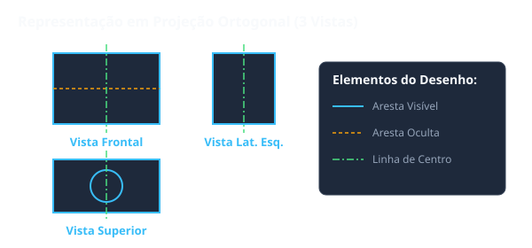

Situação de Aprendizagem 2: Projeção Ortogonal e Vistas
2.1 Conceito de Projeção Ortogonal
A projeção ortogonal é um método de representação tridimensional em duas dimensões, onde os raios projetantes são perpendiculares ao plano de projeção.

Princípio fundamental: O objeto é imaginado como "transparente", projetado sobre planos perpendiculares entre si.
2.2 Planos de Projeção
Existem dois planos principais de projeção:
- Plano Vertical (PV): onde se projeta a vista frontal
- Plano Horizontal (PH): onde se projeta a vista superior
2.3 Vistas Fundamentais
As seis vistas fundamentais de um objeto são:
| Vista | Plano de Projeção | Descrição |
|---|---|---|
| Vista Frontal (F) | Plano Vertical | Mostra a frente do objeto |
| Vista Superior (C) | Plano Horizontal | Mostra o topo do objeto |
| Vista Lateral Esquerda (E) | Plano Lateral Esquerdo | Mostra o lado esquerdo do objeto |
| Vista Lateral Direita (D) | Plano Lateral Direito | Mostra o lado direito do objeto |
| Vista Posterior (T) | Plano Vertical Traseiro | Mostra a traseira do objeto |
| Vista Inferior (B) | Plano Horizontal Inferior | Mostra a base do objeto |
2.4 Supressão de Vistas
Nem sempre são necessárias todas as seis vistas. A supressão de vistas ocorre quando o objeto é simétrico ou quando uma única vista já é suficiente para definir completamente a peça.
Importante: O número mínimo de vistas para definir uma peça é uma (vista única), desde que a forma seja claramente identificável.
2.5 Eixo de Simetria
O eixo de simetria é representado por linha contínua-fina e permite a supressão de vistas quando o objeto é simetricamente formado.